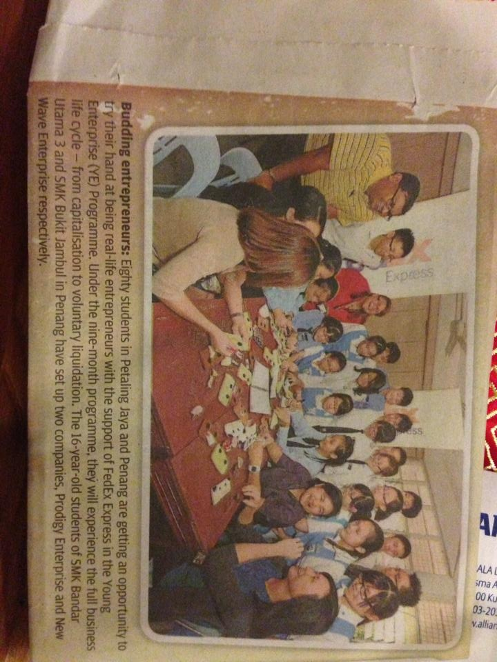
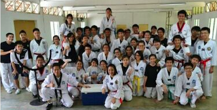

High School - SMK Bandar Utama 3
Young Enterprise (YE) Programme
When I was 16 years of age, I decided to challenge myself into a program called Young Enterprise (YE), where we, as a team of students take our ideas and turn them into business opportunities by running a own company, named Prodigy Enterprise with a funding of approximately 250 CAD. In the team, I was honored to be elected as a Vice President, where I had to lead a team of 50 students in decision making, conducted marketing campaigns on campus to increase brand awareness, and others throughout the whole program. We experienced the full business cycle from capitalization to voluntary liquidation and had to raise capital for our own business through sale of shares. In the end of the 9 months program, we made history by being the team, who earned the highest amount of profit compared to previous teams that have participated in the program and was published in the local newspaper.

Taekwondo
Throughout my high school, I was also part of the Taekwondo club for 2 years, where I trained and pushed myself to my limits through examinations of acquiring a higher level of belts by performing Taekwondo skills that I have learnt through belt testing. Throughout the 2 years, I managed to achieve a blue belt, which is the third highest in order of colors of belt.